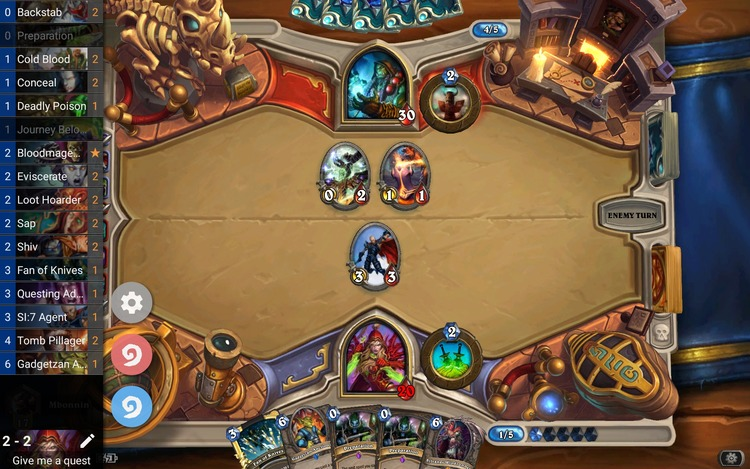

Arcane Tracker
-Hearthstone deck tracker for Android-

Features
- Overlay: You can see what card remain in your deck at any moment.
- HSReplay.net integration: Send all your games to hsreplay.net
- Track-o-bot integration: Uploads
automatically your game results to Track-o-bot so you can see your stats.
- Deck editor: Edit your decks in the overlay.
- Simple: Launch hearthstone through the Arcane Tracker app and the tracker will
setup everything for you.
How it works
Arcane Tracker parses the log files that Hearthstone writes on the SDCard. While this gives a fair amount of information about the current game, it has some limitation like not being able to retrieve the decklists or sometimes failing to detect some games, especially if you get disconnected in the middle of a game.
Contact
Reddit: https://reddit.com/r/arcanetracker
Or send us a small email at hello@arcanetracker.com
for any bug/feature request.